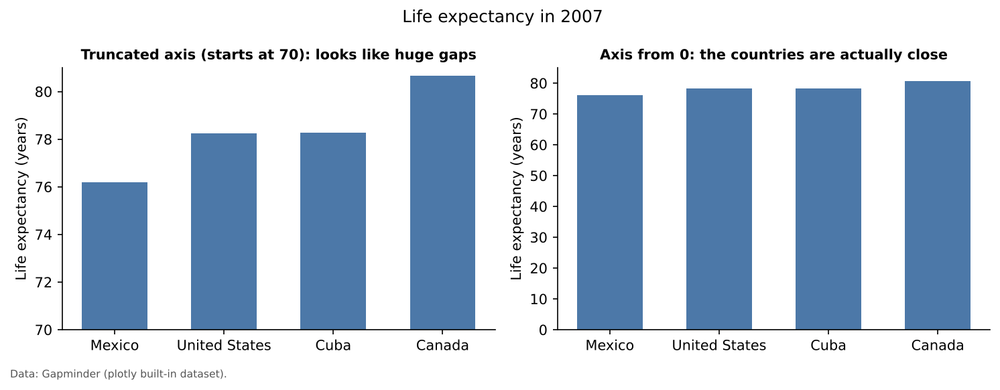
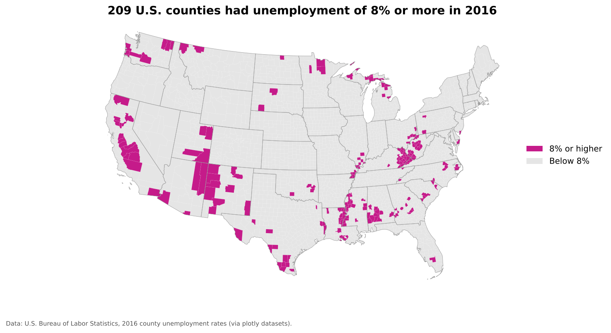
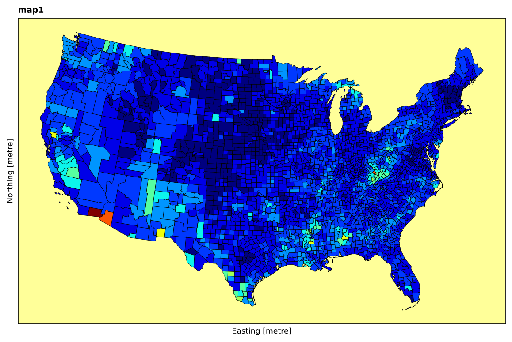
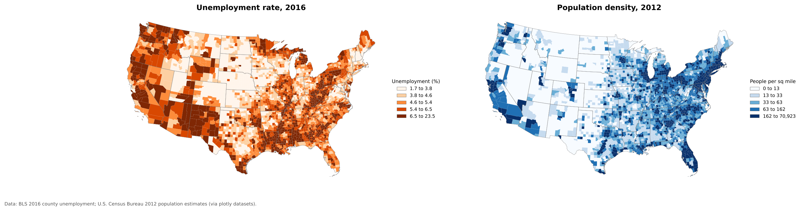

All in One View
Content from Introduction to Data Visualization
Last updated on 2026-10-17 | Edit this page
Estimated time: 75 minutes
Overview
Questions
- What is data visualization, and why does it matter for research?
- What can a chart or map show that a table cannot?
- How can a visualization mislead, even when the data are correct?
- How do exploratory and explanatory visualizations differ?
- Which tools are a good fit for beginners, and which come later?
Objectives
- Define data visualization and explain its purpose in research
- Describe the main advantages and risks of visualizing data
- Tell exploratory visualizations apart from explanatory ones
- Recognize common ways charts and maps mislead
- Compare tools for making charts and maps, from spreadsheets to Python and QGIS
- Apply a short set of design principles to your own figures
What is data visualization?
Data visualization is the graphical representation of data. Instead of reading rows and columns of numbers, the reader sees positions, lengths, areas, colors and shapes, and uses them to compare values, spot patterns and notice anything unusual.
A good visualization answers a question. “How did unemployment change after 2008?”, “Which counties have the most people over 65?” or “Is income related to commute time?” are all questions a chart or a map can answer faster and more memorably than a table.
Maps are a special kind of visualization: they use location as one of the visual channels. Most of this module is about maps, but the same principles apply to every chart, so we start there.
Why visualize?
- Patterns are easier to see than to read. Our visual system is very good at comparing positions and lengths, noticing clusters, and picking out a value that does not fit. A trend across 50 monthly figures is obvious in a line chart and easy to miss in a table.
- Visuals reveal what summary statistics hide. Very different datasets can share the same mean, variance and correlation and still look nothing alike when plotted. (Anscombe’s quartet is the classic example; search for it if you have not seen it.)
- They catch data problems. Impossible values, missing records, duplicated rows and wrong units often show up immediately in a quick plot.
- They communicate. A clear figure lets colleagues, community partners and policymakers grasp a result without reading your code or your tables.
Exploratory and explanatory visualization
- Exploratory figures are for you. They are quick, often rough, and you make many of them while you get to know your data.
- Explanatory figures are for others. They carry one clear message, with a title that states it, labeled axes, units, a legend and a data source.
Most of the figures in a research project are exploratory. The few that reach a paper, poster or report should be carefully designed explanatory figures.
Advantages and risks
| Advantages | Risks |
|---|---|
| Fast comparison of many values | A misleading scale can exaggerate or hide differences |
| Reveals trends, clusters and outliers | Too much decoration (“chartjunk”) adds noise, not information |
| Exposes data quality problems | The wrong chart type can suggest relationships that are not there |
| Communicates across expertise levels | Poor color choices exclude readers with color vision deficiency |
| Makes results memorable | A polished figure can make weak evidence look convincing |
How a correct chart can still mislead
The two bar charts below show exactly the same numbers. On the left, the vertical axis starts at 70, which makes the differences between countries look enormous. On the right, the axis starts at 0, and the countries turn out to be quite similar.

Bar charts should almost always start at zero, because readers compare bar lengths. Line charts and dot plots can start elsewhere, because readers compare positions, but the axis must be clearly labeled.
Big data and visualization
Large datasets make visualization more important, not less:
- Volume. Nobody can read a million rows, but a histogram, density plot or map can show the whole distribution at once.
- Variety. Combining tables, text and locations often calls for layered figures, such as a map with a chart beside it.
- Many variables. With dozens of variables, small multiples (many small, identical charts, one per group) or scatterplot matrices let you compare them systematically.
- Interactivity. Zooming, filtering and hover tooltips let readers explore data that would overwhelm a static figure.
Large datasets also bring practical problems. Plotting millions of points can be slow and produce a solid blob of ink. Sampling, aggregating (for example into hexagons or counties) and transparency are the usual remedies.
Common chart types and what they are for
| Question | Chart type |
|---|---|
| How does a value change over time? | Line chart |
| How do categories compare? | Bar chart (horizontal if labels are long) |
| How are values distributed? | Histogram, box plot |
| Are two numeric variables related? | Scatter plot |
| How do many variables relate to each other? | Correlation heatmap, scatterplot matrix |
| How does a whole divide into parts? | Stacked bar; pie chart only for 2 or 3 parts |
| Where does something happen? | Map (choropleth, proportional symbols, dots; see the map episodes) |
Tools
| Tool | Good for | Cost | In this curriculum |
|---|---|---|---|
| Excel or Google Sheets | Quick bar and line charts | Free or licensed | Not covered |
| Tableau Public | Interactive dashboards without code | Free public version | Not covered |
| Python (Matplotlib, Seaborn, Plotly, GeoPandas) | Reproducible charts and maps, from quick to publication quality | Free, open source | The notebooks in this episode |
| QGIS | Desktop mapping and cartographic layouts | Free, open source | The QGIS episode of this module |
| R (ggplot2, tmap, sf) | Statistical graphics and maps | Free, open source | Not covered |
| JavaScript (D3, Leaflet) | Custom interactive web graphics | Free, open source | Not covered |
We use Python in Google Colab for charts and simple maps, and QGIS for designed maps, because both are free and widely used in the social sciences.
Principles of effective visualization
These principles come from the work of Edward Tufte, William Cleveland, Alberto Cairo and others.
- Start with the question. Decide what the figure should show before choosing a chart type.
- Choose the right chart type for that question (see the table above).
- Label everything. A title that states the message, axis labels with units, a legend and a data source.
- Be honest with scales. Start bar charts at zero, and say clearly when an axis does not.
- Remove clutter. Delete anything that does not help the reader: heavy gridlines, 3D effects, background images, redundant labels.
- Use color with purpose. Color should encode data or draw attention, not decorate. Use colorblind safe palettes such as viridis or ColorBrewer schemes.
- Prefer small multiples to crowded charts. Several simple panels beat one chart with ten lines.
- Never put two unrelated scales on one axis. Temperature and rainfall belong in two panels, not on one shared y-axis.
- Make it accessible. Add alt text, keep good contrast, and do not rely on color alone.
Ethics
Visualizations influence decisions about funding, policy and people’s lives.
- Do not cherry pick time windows, places or subsets to support a conclusion.
- State your data source and its limitations.
- Protect privacy. Maps of individual addresses or small areas can identify people.
- Be careful with sensitive topics such as health, crime or immigration. How you classify and color data can stigmatize places and the people who live there.
Practice
Work through the notebooks below in Google Colab. Click File > Save a copy in Drive first so you can save your changes.
Challenge 1: Exploratory or explanatory?
For each figure, decide whether it is exploratory or explanatory:
- A quick histogram you make to check whether income values look reasonable.
- A map of county vaccination rates in a public health department press release.
- A scatterplot matrix of ten survey variables you look at before choosing a model.
- Exploratory: it is for you, to check the data.
- Explanatory: it carries one message to a general audience, so it needs a clear title, legend, source and careful color choices.
- Exploratory: it helps you decide what to analyze next.
Challenge 2: Spot the problems
A colleague shows you a 3D pie chart with 12 slices in rainbow colors, no title and no labels, showing the share of survey respondents in each of 12 age groups. List at least four problems and suggest a better chart.
- 3D distorts slice sizes: front slices look bigger than back slices.
- Twelve slices are too many to compare by angle.
- Rainbow colors have no order, even though age groups do, and some colors are hard to tell apart for people with color vision deficiency.
- No title, labels or percentages, so the reader cannot tell what is shown.
A better choice is a bar chart (or histogram) of the 12 age groups in order, in a single color, with a title, labeled axes and the survey source.
Notebooks
| Level | Notebook | What you will do |
|---|---|---|
| Beginner | 1a. Making a Good Chart | Build line and bar charts, then fix common problems: missing labels, truncated axes, wrong chart type, too many colors |
| Intermediate | 1b. Choosing the Right Chart | Distributions, scatter plots, small multiples, correlation heatmaps and interactive charts |
| Advanced | 1c. From Charts to Maps | Choropleth maps, normalization, classification methods, colorblind safe palettes and interactive maps |
The notebooks use datasets built into Plotly, so they need no download or account. Notebook 1c also offers an optional section for learners with a free Census API key.
- Data visualization turns numbers into positions, lengths, areas and colors that people can compare quickly.
- Exploratory figures help you understand your data; explanatory figures communicate one message to others.
- Correct data can still mislead through truncated axes, the wrong chart type or poor color choices.
- Choose the chart type from the question, label everything, and keep scales honest.
- Python and QGIS are free tools that cover charts, maps and cartographic layouts.
Content from Cartography Checklists
Last updated on 2026-10-17 | Edit this page
Estimated time: 75 minutes
Overview
Questions
- What should I decide before I start making a map?
- How do audience, message and medium shape a map’s design?
- How can a map mislead, even when the data are correct?
- When do I need more data, or a better understanding of my data, before mapping?
Objectives
- Identify the audience, purpose and medium of a map before designing it
- Choose the data attributes that support a single clear message
- Recognize design choices that confuse or mislead readers
- Decide whether additional data or research is needed
- Use a checklist to review a map before sharing it
Why plan before you map?
Maps are persuasive. People tend to trust them, and a map can be read in seconds. That makes a well designed map a powerful way to share research, and a poorly designed one a powerful way to mislead.
Most map problems are decided before any software is opened: who the map is for, what it should say, and which data can support that message. This episode is a set of questions to ask, in order, every time you make a map. The next episode covers the design tools (color, classification, projections) you use to answer them.
Good cartography rests on a few core design principles:
- Legibility: everything the reader needs can be read easily.
- Visual contrast: important features stand out from less important ones.
- Figure and ground: the data (figure) separates clearly from the background (ground), such as a basemap.
- Hierarchy: the most important element is noticed first, the least important last.
- Balance: the elements are arranged without clutter or large empty areas.
1. Know your audience
The audience shapes every other decision.
Ask yourself:
- Are they researchers, policymakers, community members or students?
- How familiar are they with maps and with your topic?
- How much detail can they use?
| Audience | Design implications |
|---|---|
| General public | Few classes, plain language labels, a title that states the conclusion, minimal jargon |
| Policymakers | One clear message, the places they are responsible for clearly marked, sources stated |
| Researchers | More detail, precise class breaks, projection and methods stated, uncertainty shown |
Key idea
A map of the same data for scientists and for the public should not look the same.
2. Define your message
Every map should answer one clear question. If you cannot state the message in one sentence, the reader will not be able to find it either.
Ask yourself:
- What is the single most important takeaway?
- Am I showing a pattern, a comparison, or a change over time?
Avoid:
- Showing many variables at once on one map
- Leaving the reader to work out the point alone
A useful habit is to write the message as the map’s title. The map below states its conclusion in the title, shows only one distinction (8% or more versus below 8%), and greys out everything else so the highlighted counties stand out.

3. Choose the right data attributes
Not all data belongs on your map. Select the variables that support your message and that make sense spatially.
Ask yourself:
- Which variable answers my question?
- Do I need a supporting variable, such as population, to interpret it?
- What type of geometry do I have: points, lines or polygons?
- Is my variable a count (number of people) or a rate (percent, per 1,000, per square mile)? Counts on area maps usually need to be converted to rates; see the next episode.
Matching data to visual variables:
| Data | Visual variable | Example |
|---|---|---|
| Ordered quantities (low to high) | Lightness of one color | Unemployment rate |
| Magnitudes at locations | Symbol size | City population |
| Categories with no order | Different hues or shapes | Land use type |
Challenge 1: Which variable?
You have county data on average temperature, total precipitation and elevation. Your goal is a map of drought risk. Which variable would you prioritize, and what else might you need?
Precipitation is the most direct indicator, because drought is a shortage of water. Even better is precipitation compared with normal (for example, percent of the long-term average), since 20 inches a year is normal in some places and a severe drought in others. Temperature is a useful supporting variable because heat increases evaporation. Elevation alone says little about drought.
4. Consider how readers will perceive the map
Maps are not neutral. Design choices change what readers believe.
Ask yourself:
- Do my colors carry meanings I do not intend (for example, red for “danger”)?
- Does my classification make some places look worse or better than they are?
- Can the main pattern be seen at a glance?
- Can someone with color vision deficiency read it? (See the Accessibility episode.)
Darker or more saturated colors are read as “more”. Keep that order consistent with the data: dark for high values, light for low values.
The map below uses the same unemployment data as the map in section 2, and is very hard to read:

What goes wrong here:
- A rainbow palette has no natural order, so readers cannot tell which colors mean high or low.
- Twelve classes are more than anyone can match to a legend, and there is no legend anyway.
- The title (“map1”) says nothing; the axis labels are leftover software defaults.
- Heavy black borders and a bright background compete with the data (poor figure and ground).
- Equal interval classes put almost every county in the first few classes, so most of the map is one dark blue.
Best practice: make the data the figure and everything else the ground. Use a light, muted basemap or none at all, thin light boundaries, and a sequential palette with five to seven classes.
5. Choose the right medium
Where the map will be seen affects its design.
| Medium | Design implications |
|---|---|
| Web map | Interactive, zoomable; simplify the basemap; add halos to labels so they read over any background |
| Static, high resolution; check how it looks in black and white; print a test copy | |
| Slides | Simple and bold; large text; one message per slide; viewed from a distance |
| Social media | Small screens; very few classes; title and source inside the image |
Ask yourself: Will readers zoom in? Will it be printed in greyscale? How large will it appear?
6. Will your map inform decisions?
Some maps are exploratory; others guide real actions such as where to open a clinic or which neighborhoods receive funding.
Decision making maps should:
- Be as accurate as the data allow
- Show uncertainty where possible (for example, margins of error for American Community Survey estimates, or hatching for unreliable values)
- Avoid simplifications that change the conclusion
Examples include flood risk maps used by planners and disease maps used during outbreaks.
Important
If your map influences decisions, accuracy and clarity matter more than visual appeal.
7. Understand what your audience already knows
Ask yourself:
- Do readers understand the variable (for example, what “median household income” means)?
- Do units, time periods or scales need explaining?
- Would an annotation help (“highest rate in the state”)?
Tips:
- Include a legend with units and a descriptive title.
- Use plain language where possible.
- Give context: time period, geography and data source.
- Include the essential map elements: a scale bar when distance matters, a north arrow when orientation is not obvious, and a source line.
Aim for maximum information with minimum effort: the reader should get the main idea quickly, without struggling.
8. Do you need more data?
Incomplete data can lead to misleading maps.
Ask yourself:
- Are there variables that change how this one should be read?
- Is the data recent enough?
- Is the spatial resolution right for the question (state, county, tract)?
For example, a map of unemployment rates can look dramatic in sparsely populated counties where a change of a few hundred jobs moves the rate a lot. Showing population next to it puts the pattern in context:

The darkest fifth of counties on the left (unemployment of 6.5% or more) are, on average, less densely populated than other counties and together are home to only about 1 in 10 people in the contiguous United States. Meanwhile, the 41 counties with more than a million residents had a median rate of 4.5%, slightly below the median for all counties (5.0%). Neither map alone tells the whole story. Rates and counts answer different questions: “where is unemployment common?” versus “where do most unemployed people live?”
9. Do you understand your data?
Before mapping, make sure you understand your dataset.
Ask yourself:
- What exactly does each variable measure, and how was it collected?
- Are there known biases, gaps or margins of error?
- Have you explored the data with summary statistics and quick plots?
If not:
- Do some exploratory analysis (histograms, maps of each variable)
- Read the metadata and documentation
- Ask someone who knows the data
- For advanced work, run a sensitivity check: does the pattern change if you change the classification, the year or the geographic unit?
Cartography checklist
Before sharing a map, check that:
Challenge 2: Review a map
Apply the checklist to the poorly designed map in section 4. Which items fail?
- Clear message: fails. The title is “map1” and nothing says what is shown.
- Misleading interpretations: fails. The rainbow palette and equal interval classes hide the pattern and make a few counties look extreme.
- Units, time period, source: fail. There is no legend, year or source.
- Color vision deficiency: fails. Rainbow palettes contain red and green pairs that many readers cannot distinguish.
- Medium: questionable. The bright background would print poorly and distract on screen.
Final thought
A good map is not only attractive. It is honest, clear and purposeful: it respects the data, serves its audience, and communicates without distortion.
- Think of a map you saw recently. What did it do well? What could be improved?
- How would you present the same data differently for a different audience?
- Share an example of a map that misled you, or one that worked brilliantly, and explain why.
- Decide the audience, message and medium before designing a map.
- State the message in the title and show only the data that supports it.
- Rates and counts answer different questions; choose deliberately.
- Design choices such as palette and classification change what readers believe.
- Review every map against a checklist before sharing it.
Content from Fundamentals of Map Design
Last updated on 2026-10-17 | Edit this page
Estimated time: 105 minutes
Overview
Questions
- What makes a map effective?
- How do visual hierarchy and visual variables guide a reader?
- How should colors be chosen for different kinds of data?
- What are map scale and projections, and why do they matter?
- Which thematic map type suits which data?
- Why should counts usually be converted to rates before mapping?
- How does the classification method change what a map shows?
Objectives
- Identify the core elements of a map layout
- Apply visual hierarchy and visual variables to improve clarity
- Choose sequential, diverging or categorical color schemes appropriately
- Explain map scale and the trade-offs between projections
- Select a thematic map type that fits the data
- Normalize counts into rates where appropriate
- Compare six classification methods and choose one deliberately
- Find the equivalent tools in Python and QGIS
What is a map?
A map is a visual representation of spatial data designed to communicate information about locations, patterns and relationships. Like any figure, it is a communication tool, not just a picture.
A good map:
- Has a clear purpose
- Represents the data accurately
- Is easy to read and interpret
- Avoids misleading elements
- Includes the map elements the reader needs
Map elements

| Element | Purpose | Always needed? |
|---|---|---|
| Title | States what the map shows (ideally its message) | Yes |
| Mapped area | The data itself | Yes |
| Legend | Explains colors, symbols and units | Yes, unless there is a single obvious symbol |
| Data source | Lets readers check and trust the data | Yes |
| Scale bar | Shows distance | When distance matters (local and regional maps) |
| North arrow | Shows orientation | When north is not up or orientation is unclear |
| Projection note | States the coordinate system | For technical audiences |
| Neat line | A frame that groups the elements | Optional |
| Inset map | Shows location in a wider area, or distant parts such as Alaska and Hawaii | When needed |
Key idea
Every element should earn its place. A north arrow on a world map in a familiar projection adds nothing; a missing legend makes a map unreadable.
Visual hierarchy
Visual hierarchy controls what the reader sees first, second and last.
Tools for creating hierarchy:
- Size: larger elements draw attention first
- Lightness and contrast: strong contrast with the background stands out
- Color saturation: vivid colors stand out against muted ones
- Position: elements near the center or top are noticed early
A typical hierarchy:
- The data layer: strongest colors and contrast
- Title and legend: clear but not overpowering
- Labels: readable, but secondary to the data
- Basemap, boundaries and other context: muted greys and thin lines
Challenge 1: What do you see first?
Look at the map elements figure above. What do you notice first, second and third? Is that the order the mapmaker would want?
Most readers notice the dark blue counties first (the data), then the large title, then the legend. That is the intended order: the data and its message come first, and the legend explains them. The red annotation labels are added for this lesson and would not appear on a real map.
Visual variables
Visual variables are the properties of a symbol that can change to represent data. The idea comes from the cartographer Jacques Bertin.
| Visual variable | Good for | Example |
|---|---|---|
| Position | Location (on maps, this is fixed by geography) | Where a city is |
| Size | Quantities | City population as circle size |
| Lightness (value) | Ordered data, low to high | Unemployment rate as light to dark |
| Hue | Categories | Land use type |
| Shape | Categories (points) | Airport type |
| Orientation and texture | Categories, secondary encoding | Hatching for uncertain values |
The key rule: use ordered variables (size, lightness) for ordered data, and unordered variables (hue, shape) for categories. Using different hues for low to high values forces the reader to keep looking at the legend.
Colors on maps
There are three kinds of color scheme, one for each kind of data.
![Three maps of the contiguous United States. Left, sequential: county unemployment rates in five shades of blue from very light to dark. Middle, diverging: each county's unemployment rate compared with the national county median of 5.0 percent, with dark and light blue below the median, grey within half a point, and light and dark red above. Right, categorical: states colored by Census region in four distinct colors, green for Northeast, orange for Midwest, purple-blue for South and pink for West.](../dv_color_schemes.png)
| Scheme | Use for | How it looks | Example palettes |
|---|---|---|---|
| Sequential | Values from low to high | One hue, light to dark | Blues, Greens, viridis, YlGnBu |
| Diverging | Values above and below a meaningful midpoint (zero, an average, 50%) | Two hues meeting at a neutral light middle | RdBu, BrBG, PuOr |
| Categorical | Groups with no order | Distinct hues of similar lightness | Set2, Dark2, Tableau 10 |
Best practices:
- Light colors for low values and dark colors for high values (most readers assume dark means more).
- Use a diverging scheme only when the midpoint means something. The middle map above uses the national median, so it answers “is this county above or below typical?”
- Avoid rainbow palettes for ordered data; they have no natural order and create false boundaries.
- Avoid red and green together; see the Accessibility episode.
- Five to seven classes is usually the most a reader can tell apart.
ColorBrewer is a free tool for choosing map palettes, including colorblind safe ones. The same palettes are built into QGIS and Python.
Scale
Map scale is the relationship between a distance on the map and the same distance on the ground, for example 1:24,000 (one inch on the map is 24,000 inches, or 2,000 feet, on the ground).
- Large-scale maps show a small area in high detail, such as a city map (1:10,000).
- Small-scale maps show a large area with less detail, such as a world map (1:50,000,000).
The terms feel backwards at first: 1/10,000 is a larger fraction than 1/50,000,000, so the city map has the larger scale.
Scale matters because it determines how much detail can be shown and which patterns are visible. A pattern that is clear across counties may disappear, or reverse, at the tract level.
Projections
The Earth is round; maps are flat. A projection is a mathematical method for flattening the Earth, and every projection distorts at least one of area, shape, distance or direction.

| Projection family | Preserves | Typical use |
|---|---|---|
| Equal area (Albers, Equal Earth, Mollweide) | Relative area | Thematic maps of rates or densities; use these for choropleth maps |
| Conformal (Mercator, Lambert Conformal Conic) | Local shapes and angles | Navigation, web map tiles, large-scale local maps |
| Equidistant (Azimuthal Equidistant) | Distance from one point | Distance or flight range maps |
| Compromise (Robinson, Winkel Tripel) | Nothing exactly, everything approximately | General reference world maps |
Web maps (Google Maps, OpenStreetMap) use Web Mercator, which is why Greenland and Russia look enormous online. For thematic maps of the United States, the USA Contiguous Albers Equal Area projection (EPSG:5070) is a common choice; it is used for the U.S. maps in this lesson.
Try The True Size Of to drag countries north and south on a Mercator map and see how much their apparent size changes. Drag Russia down to the equator and compare it with Africa.
Important
There is no perfect projection, only projections suited to particular purposes. When a map compares areas or densities, use an equal area projection.
Labels and legends
Labels:
- Readable size and font; avoid overlap
- Use hierarchy: larger text for more important places
- Add a light halo or outline when labels sit on top of busy backgrounds
Legends:
- Explain every color and symbol
- Include units (“percent”, “people per square mile”)
- Use readable, rounded class breaks where possible
- Order classes from low to high, matching the color order
Thematic map types
Choropleth maps
A choropleth map shades areas (states, counties, tracts) by a data value.

Best for: rates, ratios and densities (percent, per capita, per square mile). Avoid: raw counts, because large areas and large populations dominate the map (see Normalization below).
Proportional symbol maps
Proportional symbol maps place a symbol, usually a circle, at each location and size it by a value.

Best for: counts and magnitudes at points, or counts for areas when you want to avoid the choropleth problem with raw counts. Scale the circle’s area, not its radius, to the value.
Dot density maps
Dot density maps place one dot for a fixed number of things (people, households, cases) inside each area.

Best for: showing how a count is distributed. Remember that dots are placed at random inside each area; they do not show exact locations.
Cartograms
A cartogram resizes areas according to a data value. In a non-contiguous cartogram, each area keeps its shape but is shrunk (or grown) in place, so gaps open between neighbors.

Best for: emphasizing magnitude over geographic area, for example showing that large but sparsely populated states hold few people. Other types, such as contiguous and Dorling cartograms, distort shapes or replace them with circles.
Multivariate maps
A multivariate map shows two or more variables at once, usually with different visual variables.

Best for: exploring relationships between variables. Combine different visual variables (fill lightness for one, symbol size for another) rather than two sets of colors. Keep it to two or three variables, or the map becomes hard to read.
Normalization: counts versus rates
Normalizing means dividing a count by something that accounts for size: population, households, land area or the total of a group. It turns “how many?” into “how common?”.
Choropleth maps of raw counts mostly show where many people live. The two maps below show the same data:
![Two county maps of the contiguous United States. Left: number of Hispanic residents, where almost every county is in the lightest class and only a few large counties stand out, such as Los Angeles, Harris County (Houston), Cook County (Chicago) and Miami-Dade. Right: Hispanic residents as a percent of county population, showing broad regions with high shares across South and West Texas, New Mexico, Southern California and Arizona, along with scattered counties in the Great Plains, Washington and Florida.](../dv_normalization.png)
The count map (left) highlights a few very populous counties. The percent map (right) shows where Hispanic residents make up a large share of the community, a different and usually more useful question.
Common normalizations:
| Count | Divide by | Result |
|---|---|---|
| People | Land area | Population density (people per sq mile) |
| People in a group | Total population | Percent of population |
| Cases, crimes, events | Population | Rate per 1,000 or 100,000 |
| Households without a car | All households | Percent of households |
Rule of thumb
Use rates on choropleth maps. If you need to show counts, use proportional symbols or dot density instead.
Static and interactive maps
Static maps are fixed images. They suit print and reports, and give you full control of the design. All of the maps in this episode are static.
Interactive (web) maps let readers zoom, pan, toggle layers and click or hover for details. They suit exploration and large datasets, but take more effort to build and to design well.
For an example, open the Workshop 2026
page on this site and scroll down to the interactive map of the
workshop location. In Python, a single line, gdf.explore(),
turns a GeoDataFrame into an interactive web map (see notebook 1c).
Guideline
Use interactive maps when readers need to explore. Use static maps when you want to communicate one message clearly.
Data classification
Most choropleth maps group values into a few classes, each with one color. How you choose the class breaks can change the story the map tells. The six maps below show exactly the same data, Indiana population density by county, classified six ways.
![Six maps of Indiana counties shaded by population density, one for each classification method. Equal interval: almost every county is in the lightest class, with only Marion County (Indianapolis) dark. Quantile: counties are spread evenly across five classes, so many rural counties look dark. Natural breaks: a few urban counties stand out in darker classes, most counties are light. Standard deviation: 85 of 92 counties fall within one standard deviation of the mean, with only a few above. Pretty breaks: only three classes with round numbers, and nearly every county in the first. Geometric interval: a gradual spread of shades that separates rural counties from each other and from urban counties.](../dv_classifications.png)
The six methods
Equal interval divides the range of values into classes of equal width (for example 0 to 500, 500 to 1,000). It is easy to read and good for evenly spread data, but with skewed data, as here, almost every area lands in the first class.
Quantile puts the same number of areas in each class (here, about 18 counties per class). Every color is used equally, which is good for ranking (“top fifth of counties”), but very different values can share a class, and similar values can be split apart.
Natural breaks (Jenks) finds breaks that minimize differences within classes and maximize differences between them. It follows the natural clusters in the data and often gives a faithful picture of one map. Because the breaks depend on the data, the same method gives different breaks for different years or places, so maps are hard to compare.
Standard deviation shows how far each value is from the mean (for example, “more than 1 standard deviation above”). It is useful when the question is “how unusual is this place?” and best paired with a diverging palette. With skewed data like this, most areas fall in the middle class.
Pretty breaks uses round, easy to read numbers (0, 1,000, 2,000). Readers like round numbers, but the breaks may not match the shape of the data.
Geometric interval makes each class a constant multiple wider than the last. It suits strongly skewed data, such as population density or income, where most values are small and a few are very large.
You can also set manual breaks at meaningful values, such as the poverty line or a policy threshold, which is often the best choice for maps that inform decisions.
Where the breaks fall
A histogram with the class breaks drawn on it shows why the maps look so different:

Choosing a method
| Method | Best use | Watch out for |
|---|---|---|
| Equal interval | Evenly spread data; familiar ranges such as percentages | Skewed data puts nearly everything in one class |
| Quantile | Rankings and comparisons (“top 20%”) | Similar values split; different values grouped |
| Natural breaks | Showing clusters in one dataset | Breaks are hard to compare across maps |
| Standard deviation | How unusual each area is | Readers must understand standard deviation |
| Pretty breaks | General audiences | Breaks may not suit the data |
| Geometric interval | Strongly skewed data | Less intuitive class ranges |
| Manual breaks | Meaningful thresholds | Needs a good reason for each break |
Always look at a histogram before choosing. If you will compare several maps (different years or places), use the same breaks on all of them.
Challenge 2: Choose a classification
You are mapping U.S. county median household income, which ranges from about $25,000 to $150,000 with most counties between $45,000 and $70,000 and a long tail of wealthy suburban counties.
- Which method would you choose for a single map in a report, and why?
- Which would you choose if you were comparing maps from 2010 and 2020?
- Natural breaks or quantile both work for a single map. Natural breaks shows the main cluster and the wealthy tail as separate classes. Quantile is good if the message is about rankings (“the top fifth of counties”). Equal interval would put most counties in one or two classes because of the long tail.
- Use the same manual breaks (for example $40k, $55k, $70k, $90k) on both maps, so a color means the same income in both years. Remember to adjust for inflation if you compare dollar values over time.
Challenge 3: Count or rate?
Which of these should be normalized before making a choropleth map, and what would you divide by?
- Number of COVID-19 cases by county
- Median age by county
- Number of grocery stores by census tract
- Normalize: divide by population to get cases per 100,000 residents.
- Already a rate-like value: a median is a summary of each county, so it can be mapped directly.
- Normalize: divide by population (stores per 10,000 people) or by area (stores per square mile), depending on the question. Or show the stores as points instead.
Python and QGIS equivalents
Each concept in this episode has a direct tool in both platforms used in this curriculum.
| Concept | Python (GeoPandas, Matplotlib) | QGIS |
|---|---|---|
| Choropleth | gdf.plot(column="rate", legend=True) |
Layer Properties > Symbology > Graduated |
| Classification method |
gdf.plot(column="rate", scheme="NaturalBreaks", k=5)
(uses mapclassify) |
Graduated > Mode (Equal Count (Quantile), Equal Interval, Natural Breaks (Jenks), Standard Deviation, Pretty Breaks, Logarithmic) |
| Color scheme |
cmap="Blues" or cmap="viridis"
|
Graduated > Color ramp |
| Categories | gdf.plot(column="type", categorical=True) |
Symbology > Categorized |
| Proportional symbols | gdf.plot(markersize=gdf["pop"] / 1000) |
Graduated > Method: Size |
| Dot density | Generate random points per polygon | Fill symbol > Random Marker Fill with a data-defined count |
| Normalization | gdf["rate"] = gdf["count"] / gdf["pop"] |
Open the attribute table > Field Calculator >
new field "count" / "pop"
|
| Projection | gdf.to_crs(epsg=5070) |
Project > Properties > CRS |
| Interactive map | gdf.explore() |
The qgis2web plugin |
| Layout with map elements | Matplotlib annotations | Print Layout (see the QGIS episode) |
Final takeaways
- Maps are communication tools: design them deliberately for an audience and a message.
- Use ordered visual variables for ordered data, and match the color scheme to the data.
- Use an equal area projection for thematic maps of rates and densities.
- Map rates, not counts, on choropleth maps.
- Classification changes the story; check a histogram and choose on purpose.
- When might an interactive map be worse than a static one?
- Find a choropleth map in the news. Does it map a count or a rate? Which classification does it seem to use?
- A map layout needs a title, legend and source, plus a scale bar and north arrow when they help.
- Sequential, diverging and categorical color schemes match ordered, centered and unordered data.
- Every projection distorts something; use equal area projections for thematic maps.
- Choropleth maps need rates; show counts with proportional symbols or dots.
- The classification method changes the pattern a map shows; use the same breaks to compare maps.
Content from Getting Started with QGIS: Your First Map
Last updated on 2026-10-17 | Edit this page
Estimated time: 105 minutes
Overview
Questions
- How do I load spatial data into QGIS, including directly from the web?
- How do I explore a layer’s attributes?
- How can I style point data by category and polygon data by value?
- How do I create and export a finished map layout?
Objectives
- Add a basemap and load a vector layer from a web address
- Explore a layer’s attribute table
- Style points with categorized symbology
- Build a choropleth map with graduated symbology and compare classification methods
- Create a print layout with title, legend, scale bar, north arrow and source, and export it
Before you start
You need QGIS installed. If you have not installed it yet, or the interface is new to you, follow the Setup page first. These steps were written for the QGIS 3.x Long Term Release; menus may differ slightly in other versions.
We will use two small datasets hosted with this lesson. You do not need to download anything: QGIS can read a file directly from its web address.
| Dataset | Web address | Contents |
|---|---|---|
| Alaska airports (points) | https://raw.githubusercontent.com/SpatialTurn/DataVisualization/main/data/alaska_airports.geojson |
76 airports with name, use (civilian,
military and so on) and elevation. From the QGIS sample
dataset. |
| Indiana counties (polygons) | https://raw.githubusercontent.com/SpatialTurn/DataVisualization/main/data/indiana_counties.geojson |
92 counties with pop_2012, land_sq_mi,
density (people per square mile) and
unemp_2016 (percent) |
Part 1: Add a basemap
A basemap gives your data geographic context.
- In the Browser panel (usually on the left), expand XYZ Tiles.
- Right-click OpenStreetMap and choose Add Layer to Project.
- A world map appears in the map canvas.
If you do not see the Browser panel, open it with View > Panels > Browser.
Part 2: Load a layer from the web
- Go to Layer > Add Layer > Add Vector Layer.
- Under Source Type, choose Protocol: HTTP(S), cloud, etc.
- Leave Type as HTTP/HTTPS/FTP.
- In URI, paste the airports web address from the table above.
- Click Add, then Close.
The 76 airports appear as points over Alaska, and a layer called
alaska_airports appears in the Layers
panel.
- If the points are hidden under the basemap, drag
alaska_airportsaboveOpenStreetMapin the Layers panel. Layers at the top of the list are drawn on top. - Right-click the airports layer and choose Zoom to Layer.
Loading local files
To load a file saved on your computer instead, keep Source
Type as File and browse to it. For a
shapefile, select the .shp file; the .dbf,
.shx, .prj and .cpg files with
the same name must be in the same folder.
Save your project now (Project > Save, which
creates a .qgz file) and save regularly as you work.
Part 3: Explore the attributes
- Right-click the airports layer and choose Open Attribute Table.
- You should see 76 rows, one per airport, with the
columns
name,useandelevation. - Click the
usecolumn header to sort it. How many airports are military?
The attribute table holds the data behind the map. Every styling choice you make next is based on one of these columns.
You can also click a single airport with the Identify Features tool (the “i” icon on the toolbar) to see its attributes.
Part 4: Style the points
First, give the airports a clearer symbol than the default dot.
- Right-click the airports layer and choose Properties, then the Symbology tab.
- With Single Symbol selected at the top, scroll the symbol library at the bottom and choose a marker such as topo airport. Set the Size to about 5 millimeters.
- Click Apply.

Now color the airports by how they are used:
- Change Single Symbol to Categorized.
- Set Value to
use. - Click Classify. Each airport type gets its own color.
- Double-click a symbol to change its color or size. Use clearly different colors (or shapes) for the four types.
- Click OK.
Each renderer is suited to a type of data:
| Renderer | Use for | Example |
|---|---|---|
| Single Symbol | Showing where things are | All airports in one style |
| Categorized | Categories (no order) | Airport use
|
| Graduated | Numbers (low to high) | County density
|
To rename the layer, as it will appear in the legend, open Properties > Source and change the Layer name (for example, to “Airports by use”).
Part 5: Build a choropleth map
Now load the Indiana counties and shade them by population density.
- Load the Indiana counties web address the same way as in Part 2.
- Open Properties > Symbology and change Single Symbol to Graduated.
- Set Value to
density. - Choose a Color ramp such as Blues or Viridis.
- Set Mode to Natural Breaks (Jenks) and Classes to 5.
- Click Classify, then Apply (not OK yet).
- Change Mode to Equal Interval, click Classify and Apply. Then try Equal Count (Quantile). Watch how the map changes.
Population density in Indiana is very skewed: most counties have fewer than 200 people per square mile, and Marion County (Indianapolis) has over 2,000. With Equal Interval, almost every county lands in the lightest class. Choose the mode that best shows your message, and click OK.
Why density and not population?
The layer also has pop_2012, a count. Shading areas by a
count mostly shows where big counties or big cities are. Density (people
per square mile) is a rate, so it can be compared fairly between
counties of different sizes. See the Normalization section of the Map
Design episode.
Part 6: Create a map layout
To export a finished map with all its elements, use a Print Layout.
- Go to Project > New Print Layout and give it a name.
- Add the map: choose Add Item > Add Map, then click and drag a rectangle on the page.
- Add a title: choose Add Item > Add Label, drag a box above the map, and type your title in the Item Properties panel. Make it large.
- Add a legend: choose Add Item > Add Legend and drag a box. In Item Properties, you can rename entries and remove the basemap from the legend.
- Add a scale bar: choose Add Item > Add Scale Bar. Set the units to miles or kilometers.
- Add a north arrow: choose Add Item > Add North Arrow.
- Add a source line: add another label at the bottom with the data source and your name, for example “Data: U.S. Census Bureau, BLS. Map by A. Student, 2026.”

Use Item Properties to change fonts, sizes and frames. Use the Move Item Content tool to pan the map inside its frame without moving the frame.
Part 7: Export
- In the layout window, choose Layout > Export as Image (PNG) or Layout > Export as PDF.
- Choose a file name and location and accept the default options.
- Save the project again (
.qgz). The layout is saved inside the project.

This example uses a single airport symbol. Your version will also show the airport types from Part 4. Notice that it is missing one element from our list: a data source line.
Common beginner mistakes
- Forgetting to save the project
- Mapping counts instead of rates on a choropleth map
- Leaving layer names such as
indiana_countiesin the legend - Using too many classes or a rainbow color ramp
- Leaving out the source line, legend or title
Keep it simple
Start with a clear, simple map. Add complexity only when it helps the reader.
Hands-on exercise
Challenge 1: An unemployment map of Indiana
Using the Indiana counties layer, create and export a finished map of
2016 unemployment rates (unemp_2016).
- Use Graduated symbology with 5 classes and a sequential color ramp.
- Try two classification modes and pick the one that shows the pattern best.
- Build a layout with a title that states what the map shows, a legend with units (%), a scale bar, a north arrow and a source line.
- Export it as a PNG.
-
Value:
unemp_2016. Color ramp: a single hue such as Oranges or Blues (light for low, dark for high). - Mode: unemployment ranges only from about 3.1% to 6.6% and is not very skewed, so Natural Breaks or Equal Interval both give readable maps. Quantile also works if the message is about rankings.
- Legend: rename the layer to something like “Unemployment rate, 2016 (%)”.
- Title: for example, “Unemployment was highest in northwestern and southern Indiana in 2016”. Check your own map before writing a conclusion like this.
- Source: “Data: U.S. Bureau of Labor Statistics, 2016.”
Challenge 2: Fix the projection (optional)
Alaska looks stretched over the OpenStreetMap basemap, which uses Web Mercator. Change the project’s coordinate reference system to one designed for Alaska and compare.
Click the EPSG code in the bottom-right corner of the QGIS window (or Project > Properties > CRS), search for 3338 (NAD83 / Alaska Albers), select it and click OK. The map is redrawn in an equal area projection for Alaska, and the state no longer looks enormously stretched. The basemap is reprojected too, although its labels may look slightly blurred.
Final takeaways
- QGIS is a free, powerful tool for designing maps.
- Layers can be loaded from files on your computer or directly from a web address.
- Categorized symbology suits categories; graduated symbology suits numbers.
- The print layout is where map elements (title, legend, scale bar, north arrow, source) come together.
- What challenges did you face while making your first map?
- How would you change your map for a different audience?
- Add Vector Layer with the HTTP(S) protocol loads data straight from a web address.
- The attribute table holds the data behind every styling choice.
- Use Categorized for categories and Graduated for numbers, and compare classification modes.
- A Print Layout combines the map with its title, legend, scale bar, north arrow and source.
- Save the project often; export layouts as PNG or PDF.
Content from Accessibility in Map Design
Last updated on 2026-10-17 | Edit this page
Estimated time: 90 minutes
Overview
Questions
- Why is accessibility important in cartography?
- How do different types of color vision deficiency affect map reading?
- How can we design maps that are readable for people with color vision deficiency?
- What roles do hue, saturation and lightness play in accessible design?
- How can I choose and test accessible palettes in QGIS and Python?
Objectives
- Explain why accessibility matters in map design
- Describe the main types of color vision deficiency (CVD)
- Apply color-safe cartographic principles, especially varying lightness
- Select accessible color palettes in QGIS and Python
- Test maps with simulators and write useful alt text
Why accessibility matters in maps
Maps are communication tools. If part of your audience cannot read your colors, your map has failed for them.
Accessible maps:
- Reach wider audiences
- Are easier to read for everyone, including on poor screens, projectors and greyscale printouts
- Reduce misunderstanding
- Are increasingly required for public and university websites and publications
Key idea
Accessibility is not an extra step at the end. It is part of good cartographic design.
Understanding color vision deficiency
Color vision deficiency (CVD), often called colorblindness, changes how some people distinguish colors. Most people with CVD see color, but some pairs of colors look alike to them.
Among people of Northern European ancestry, about 8% of men and 0.5% of women have a red-green color vision deficiency; rates are somewhat lower in many other populations. In a room of 30 people, it is likely at least one person has CVD.
Types of color vision deficiency
The eye has three kinds of cone cells, sensitive to long (red), medium (green) and short (blue) wavelengths. CVD occurs when one kind is missing or works differently. When a cone type works differently, the condition is called an anomaly (for example deuteranomaly); when it is missing, an -opia (for example deuteranopia).
Red-green deficiencies (by far the most common)
- Deuteranomaly and deuteranopia (green cones affected): the most common forms. Reds, greens, oranges and browns are easily confused.
- Protanomaly and protanopia (red cones affected): similar confusions, and reds look darker than they do to other people.
Blue-yellow deficiencies (rare)
- Tritanomaly and tritanopia (blue cones affected): blues and greens, and yellows and violets, are confused.
Complete color blindness (very rare)
- Achromatopsia (monochromacy): little or no color perception. Maps look almost entirely grey, so only lightness differences remain.
Challenge 1: Why do red-green maps fail?
Why might a choropleth map that runs from green (low) through yellow to red (high) fail for many readers?
Red-green deficiencies are the most common type of CVD. For these readers, the green and red ends of the palette can look like similar olive or brown tones, especially when they have similar lightness. The lowest and highest classes, the most important ones to tell apart, can become confused. The example in the next section shows exactly this.
Seeing the problem
The figure below shows the same map of Indiana county unemployment twice: once with a red-green palette and once with the viridis palette. The right column simulates how each looks to a person with deuteranopia.
![Four maps of Indiana counties shaded by 2016 unemployment rate in five classes. Top left: a red-yellow-green palette as seen with typical color vision, where green means low and red means high. Top right: the same map with simulated deuteranopia; the greens and reds both turn into similar olive and mustard tones, so the lowest and highest classes are hard to tell apart. Bottom left: the viridis palette, from yellow for low to dark purple for high. Bottom right: viridis with simulated deuteranopia; colors shift to yellow, tan, grey and navy, but the classes still run clearly from light to dark.](../dv_cvd_comparison.png)
With the red-green palette, the lowest class (dark green) and the highest class (red) both turn olive. With viridis, the colors change but the order from light to dark is preserved, so every class can still be read.
Common mapping problems
Poor design choices include:
- Red versus green to mean bad versus good, or high versus low
- Classes that differ in hue but have similar lightness
- Many hues with low contrast between them
- Relying on color alone to carry meaning
- Thin lines or small symbols whose color is hard to see
The solution: hue, saturation and lightness
Every color can be described by three properties.
Hue
The color family: red, blue, green and so on.
Avoid: red with green; blue with purple when tritan readers matter.
Saturation
The intensity or purity of the color, from grey to vivid.
Use: moderate saturation. Very saturated neon colors are tiring and can bleed together.
Lightness (value)
How light or dark the color is. This is the most important property for accessibility.
If classes differ clearly in lightness, they remain distinguishable even when hues are confused, and even in greyscale.
Best practice
When in doubt, vary lightness more than hue. A good test: convert your map to greyscale. If you can still read the order of the classes, most readers with CVD can too.
Designing accessible maps
Use more than color
Combine color with a second cue:
- Patterns or hatching for categories
- Labels for key values or places
- Different symbol shapes for point categories (circles, squares, triangles)
- Different line styles (solid, dashed, dotted)
For example, instead of red and green points for two kinds of facilities, use blue circles and orange squares.
Recommended colorblind-safe palettes
Sequential data
- Single-hue ramps: Blues, Greens, Purples, Greys
- Multi-hue ramps designed for CVD: viridis, cividis, YlGnBu
Diverging data
- Blue to orange (for example ColorBrewer PuOr or BrBG)
- RdBu (red and blue, not red and green)
Categorical data
- ColorBrewer Set2 and Dark2
- Okabe-Ito, a palette of eight colors designed specifically for CVD
- Tableau 10 (check with a simulator)
On ColorBrewer, tick colorblind safe to see only palettes that pass for the common types of CVD.
Avoid rainbow palettes
Rainbow ramps (such as “jet” or “Spectral” with many classes) have no natural order, create false boundaries where the hue changes quickly, and include red-green pairs. Use them only for genuinely cyclical data, and even then with care.
Accessible palettes in QGIS
Choosing a ramp
- Right-click the layer and choose Properties > Symbology.
- Choose Graduated (for numbers) or Categorized (for categories).
- Open the Color ramp drop-down and choose a ramp.
Good choices in QGIS: Viridis, Cividis, Magma, Inferno, Plasma, and the ColorBrewer ramps such as Blues, Greens, YlGnBu, PuOr and BrBG. If you do not see a ramp, choose All Color Ramps in the drop-down.
Avoid: Spectral and other rainbow ramps for ordered data, red-green diverging ramps such as RdYlGn, and very saturated custom ramps.
Testing with QGIS preview modes
QGIS can simulate how your map looks with color vision deficiency:
- In the main QGIS window, go to View > Preview Mode.
- Choose Simulate Color Blindness (Deuteranope), then try (Protanope). Recent versions also offer Tritanope and Achromatopsia, and all versions offer greyscale (“Photocopy”) previews. The exact list depends on your QGIS version.
- Check that adjacent classes are still distinguishable.
- Return to View > Preview Mode > Normal when you are done.
Preview modes also work in the Print Layout window, under View > Preview.
Accessible palettes in Python
PYTHON
# Sequential, colorblind safe
gdf.plot(column="unemp", scheme="Quantiles", k=5, cmap="viridis", legend=True)
# Single hue
gdf.plot(column="unemp", scheme="Quantiles", k=5, cmap="Blues", legend=True)
# Diverging around a meaningful midpoint (choose a red-blue or purple-orange ramp)
gdf.plot(column="change", cmap="RdBu_r", vmin=-5, vmax=5, legend=True)Notebook 1c in this module includes a step that simulates color vision deficiency in Python.
Testing your map
Always test before you publish.
Tools:
- QGIS Preview Mode (above)
- Color Oracle: a free desktop app that filters your whole screen
- Coblis: upload an image to see it with different types of CVD
- Convert the exported image to greyscale in any image editor
Ask: can someone tell the classes or categories apart without relying on hue alone?
Accessibility beyond color
Color is only part of accessibility. Also consider:
- Readable text: large enough fonts (at least 8 to 9 points on printed maps), plain fonts, good contrast with the background
- Clear legends in the same order as the data
- Alt text for every map shared online (see below)
- Screen reader friendly web maps: a data table or text summary alongside an interactive map
- No meaning conveyed only by hovering, which keyboard and touch users may not be able to do
Writing alt text for maps
Alt text is read aloud by screen readers in place of the image. For a map, describe what it shows and its main pattern, not every detail.
Weak: “Map of Indiana.”
Better: “Map of Indiana counties shaded by 2016 unemployment rate in five classes, from 3.1% to 6.6%. Rates were highest in several northwestern counties near Chicago and in parts of southern Indiana, and lowest in central and northeastern Indiana.”
Every figure in this module includes alt text written this way.
Example: good versus bad design
| Bad | Good | |
|---|---|---|
| Palette | Red to green with equal lightness | Viridis or a blue to orange palette with strong lightness steps |
| Encoding | Color only | Color plus labels or patterns |
| Legend | Small, unordered | Large, ordered low to high |
| Online | No alt text | Alt text describing the main pattern |
Accessibility checklist
Before publishing:
Challenge 2: Fix a palette in QGIS
Load the Indiana counties layer from the QGIS episode, style
unemp_2016 with Graduated symbology and
the RdYlGn color ramp. Switch to View >
Preview Mode > Simulate Color Blindness (Deuteranope). Then
change the ramp to an accessible one and preview again.
With RdYlGn under the deuteranope preview, the low and high classes look like similar olive tones. After switching to Viridis, Blues or YlGnBu, the classes run clearly from light to dark in the preview, and the map can be read correctly. Remember to switch back to Normal preview mode.
Challenge 3: Write alt text
Write alt text for the multivariate map of Indiana in the Fundamentals of Map Design episode (orange fill for unemployment, grey circles for population).
One possible answer: “Map of Indiana counties shaded in five orange classes by 2016 unemployment rate, with grey circles sized by county population. Marion County (Indianapolis) has by far the largest circle. Several northwestern counties near Chicago combine large populations with high unemployment, while many small rural counties in the south also have high rates.”
Final takeaways
Accessible maps are clearer, more inclusive and more professional. Good cartography means designing for all readers.
- Have you seen a map that was hard to read because of its colors?
- How could accessibility improve communication in your own research area?
- About 1 in 12 men of Northern European ancestry has a red-green color vision deficiency.
- Vary lightness, not just hue, so classes stay distinguishable for everyone.
- Use colorblind-safe palettes such as viridis, cividis, Blues or ColorBrewer’s colorblind safe schemes.
- Add a second cue (labels, patterns, shapes) when categories matter.
- Test with a simulator such as QGIS Preview Mode, and write alt text for maps shared online.